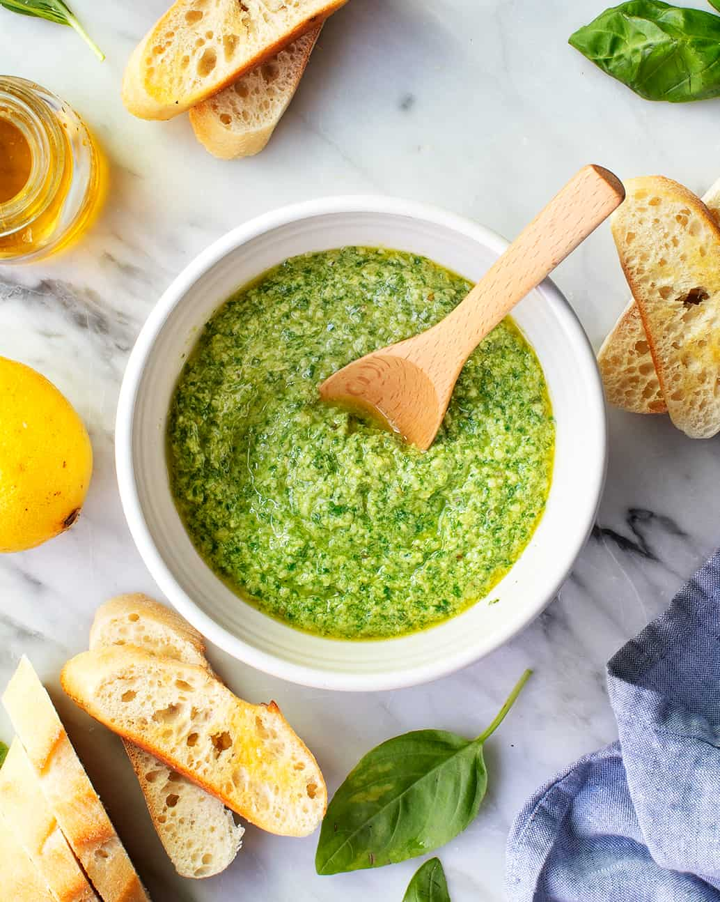

Pesto Recipe

Ingredients
- Basil - 600g
- Pine nuts- 300g
- Garlic cloves - 18 cloves or approx 1.5 - 2 bulbs
- Lemons x 4
- Parmesan cheese - 300g
- Salt - 2 teaspoons
- Black pepper - 160 x cracks
- Extra virgin olive oil - 400ml
Method
- Toast the pine nuts in a pan until slightly brown.
- Once brown, remove from pan into bowl so they don't continue to cook.
- Grate all the parmesan into a food processor.
- Juice all the lemons into the food processor.
- Add the pine nuts into the food processor and blitz until smooth.
- Peel the garlic cloves, cut the ends off the basil bunches and wash all of it.
- To the food processor add the basil, garlic, oil, salt and pepper.
- Blitz until smooth.
Home